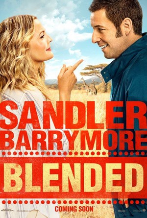
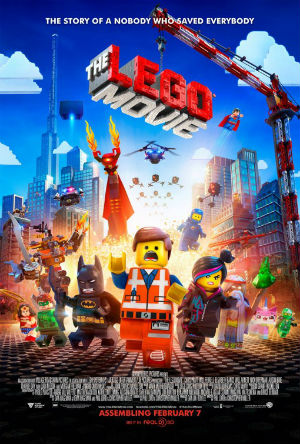
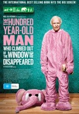

Blended

After a disastrous blind date, single parents Lauren and Jim agree on only one thing: they never want to see each other again. But when they each sign up separately for a fabulous family vacation with their kids, they are all stuck sharing a suite at a luxurious African safari resort for a week in "Blended," the third comedy collaboration between stars Adam Sandler and Drew Barrymore.
Age Classification: PG
Teenage Mutant Ninja Turtles
 The city needs heroes. Darkness has settled over New York City as Shredder and his evil Foot Clan have an iron grip on everything from the police to the politicians. The future is grim until four unlikely outcast brothers rise from the sewers and discover their destiny as Teenage Mutant Ninja Turtles. The Turtles must work with fearless reporter April O'Neil (Megan Fox) and her wise-cracking cameraman Vern Fenwick (Will Arnett) to save the city and unravel Shredder's diabolical plan.
The city needs heroes. Darkness has settled over New York City as Shredder and his evil Foot Clan have an iron grip on everything from the police to the politicians. The future is grim until four unlikely outcast brothers rise from the sewers and discover their destiny as Teenage Mutant Ninja Turtles. The Turtles must work with fearless reporter April O'Neil (Megan Fox) and her wise-cracking cameraman Vern Fenwick (Will Arnett) to save the city and unravel Shredder's diabolical plan.
Age Classification: PG
The Lego Movie

"The LEGO (R) Movie" is the first-ever, full-length theatrical LEGO (R) adventure. The original 3D computer animated story follows Emmet (Chris Pratt) an ordinary, rules- following, perfectly average LEGO minifigure who is mistakenly identified as the most extraordinary person and the key to saving the world. He is drafted into a fellowship of strangers on an epic quest to stop an evil tyrant, a journey for which Emmet is hopelessly and hilariously underprepared.
Age Classification: PG
The 100 Year-Old Man Who Climbed Out Of The Window And Disappeared

Based on the internationally best-selling novel by Jonas Jonasson, the unlikely story of a 100-year-old man who decides it's not too late to start over. For most people it would be the adventure of a lifetime, but Allan Karlsson's unexpected journey is not his first. For a century he's made the world uncertain, and now he is on the loose again.
Age Classification: M